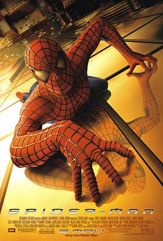

8.1
蜘蛛侠
Spider-Man
2002
美国
评分 8.1
导演:
山姆·雷米
演员:
托比·马奎尔 / 威廉·达福 / 克斯汀·邓斯特 / 詹姆斯·弗兰科 / 克里夫·罗伯逊 / 罗斯玛丽·哈里斯 / J·K·西蒙斯
类型:
冒险,动作,科幻
剧情简介
彼得·帕克是一名在学业、人际和生活压力中摸索前行的普通高中生。他在一次校外参观中被一只经过基因改造的蜘蛛咬伤，身体随之发生惊人的变化：力量倍增、反应迅速、可以攀附墙壁，甚至能从手腕射出蛛丝。最初，他试图利用这些能力改善生活，参加地下擂台比赛赚取零花钱。然而，一次轻率的放纵导致他亲爱的叔叔遭遇不幸，这场痛苦让彼得终于明白能力所附带的责任。与此同时，他的好友哈利的父亲诺曼·奥斯本因实验失败吸入神经增强药剂，性格被彻底扭曲，从天才科学家蜕变为阴险暴烈的“绿魔”。他凭借先进飞行器与强大火力在城市中制造恐慌，逐步引向与蜘蛛侠的正面对抗。彼得在追捕罪犯与保护无辜之间不断学习如何掌控自己，也在对绿魔的调查中逐渐察觉好友家庭的黑暗秘密。随着冲突升级，蜘蛛侠与绿魔在城市高楼间展开多次交锋，战斗不断考验着彼得的毅力与情感。他必须在守护最珍视的人、维持日常生活与对抗不可预测的敌人之间找到平衡。影片以经典的成长线串联起英雄的诞生，用热血、悲情与奋斗描绘蜘蛛侠最原初的故事，使彼得·帕克从普通少年逐步成长为承担责任的真正英雄。